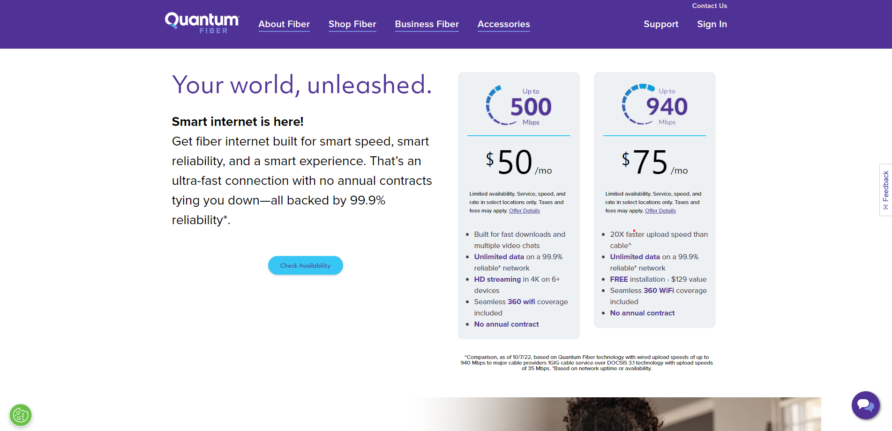
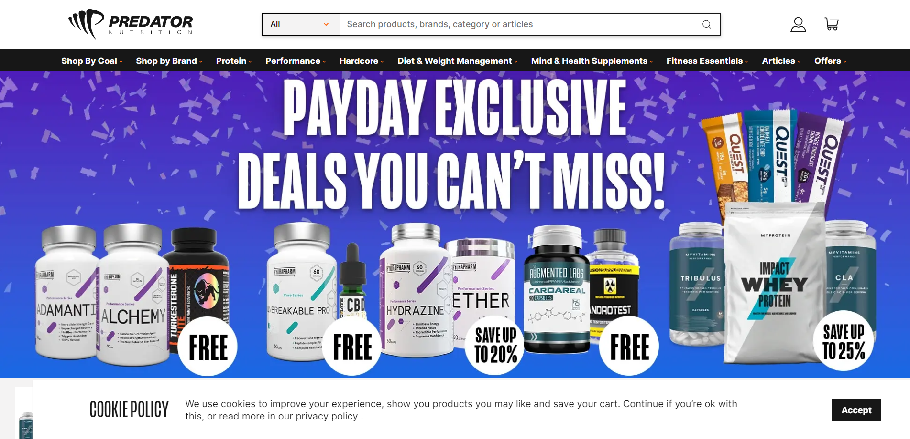
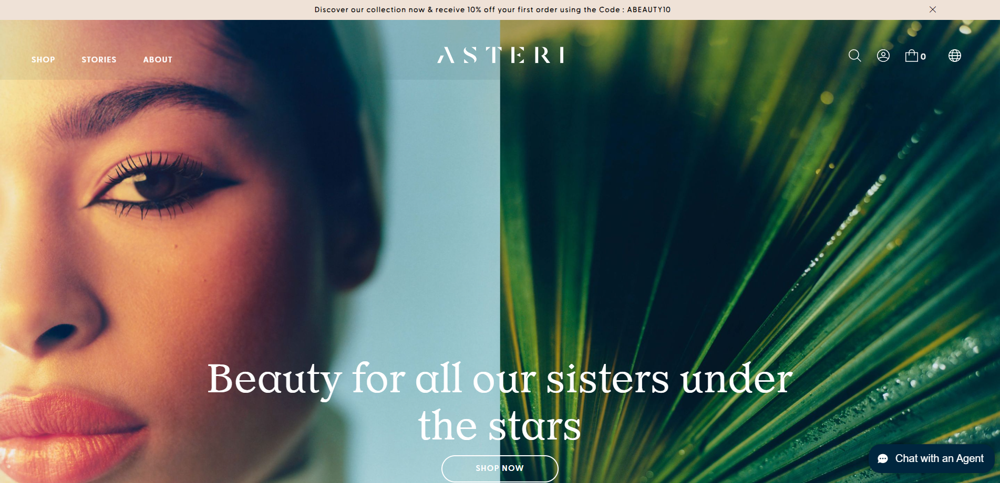
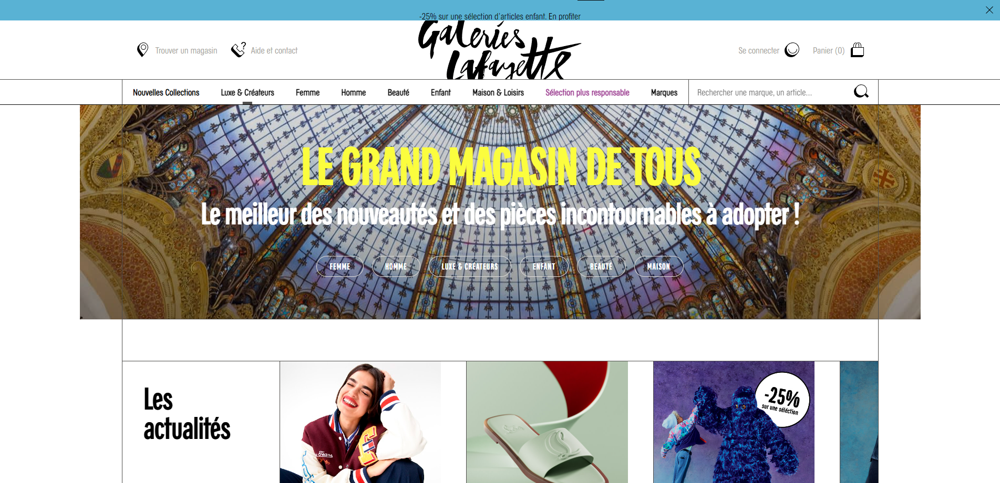
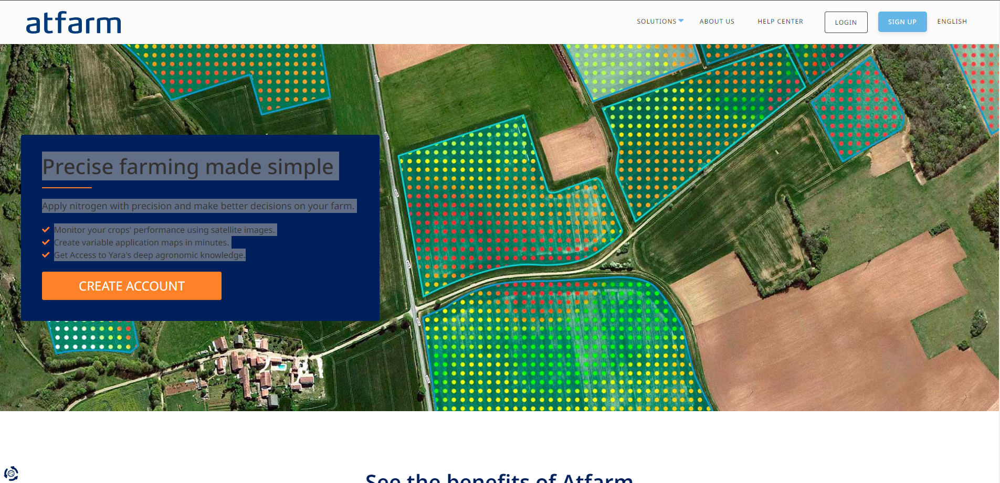

An expansive international endeavor, this project involves close collaboration with teams in the USA and the Philippines. It centers around a significant initiative aimed at revolutionizing fiber internet infrastructure. The project encompasses intricate buy flows, a diverse range of products, and integration with various payment providers, all contributing to its substantial scale and complexity.

An expansive international endeavor, this project involves a comprehensive approach to revolutionizing the realm of fitness and nutrition. It encompasses a diverse range of products and services designed to cater to various wellness goals. The project's scope extends to intricate purchase pathways and integration with multiple payment providers, exemplifying its substantial scale and multifaceted nature.

An expansive global initiative, this project is dedicated to enhancing the world of women's beauty and wellness. It encompasses an extensive array of products and services meticulously designed to cater to diverse beauty needs. The project showcases seamless integration with a variety of payment providers, ensuring convenient transactions. Additionally, it features live chat functionality, allowing real-time assistance for an enhanced user experience. Notably, the project boasts integration with marketing cloud, maximizing outreach and engagement for a comprehensive beauty solution.

An ambitious international project, this venture focuses on establishing an e-commerce platform catering predominantly to women's fashion. Operating in the French market, the project offers a curated selection of stylish products and ensembles that reflect the latest trends. Seamlessly integrated with diverse payment providers, the platform ensures smooth transactions. Additionally, the project features live chat functionality to provide real-time support, enhancing user engagement. Notably, the project's affiliation with marketing cloud further enhances its outreach capabilities, making it a comprehensive and appealing fashion destination.

Revolutionizing precision farming, this project streamlines nitrogen application for informed agricultural decisions. Satellite imagery facilitates real-time crop performance monitoring, while rapid variable application map creation empowers users. Access to Yara's agronomic expertise enhances outcomes. Developed with TypeORM, NestJS, GraphQL, PostgreSQL, and AWS integration, this comprehensive solution redefines farming. Note that the provided link doesn't lead to the active project instead, a new version is being developed (im working on it, not on the provided link to project) to further elevate the platform's capabilities.